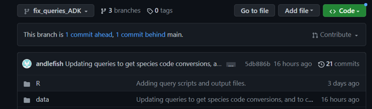

9 Collaboration & Code Review
9.1 NOTE: These sections will be completed with input from all Analytical Services Program members during the Analytical Services Program Launch Meeting slated for early 2024.
9.2 Collaboration using Git
Currently, this is an amalgamation of Jason’s Git Collaboration notes and the 2024 ADP Team Charter
Determining the “Git Work Flow” is a huge part of working in a team! Be sure to check out the “Guidelines” section in the previous link for best practices when developing a workflow.

Jason suggests the Centralized Workflow (see link above) which keeps a linear history1.
9.2.0.1 How to Collaborate
- Add collaborators to repository
- Collaborators clone repository to their local machine
- Make changes
- Create a New Branch
- Name it appropriately e.g., jason/newfeature
- Make changes locally on the new branch
- Commit changes to the new branch
- As a general rule, you should commit when you finish something that allows your code to work - usually ends up being a couple times an hour.
- As a general rule, you should commit when you finish something that allows your code to work - usually ends up being a couple times an hour.
- See below before completing this step - Push changes to the remote repository…this will create a pull request….
- Create a New Branch
9.2.0.2 Before Pushing to the Repository
- Switch to your local main branch (
$git checkout main)
- Pull the remote main into your local main (
$git pull origin main)
- Switch to your dev branch (
$git checkout <your-dev-branch-name-here>)
- Merge your local main to your local dev branch (
$git merge main)- NOTE This is where conflicts will show up if they will occur
- Fix any conflicts
- NOTE This is where conflicts will show up if they will occur
- Do some checking before pushing:
- Check the commits that will be pushed (
$git log - - oneline;qescapes you back to the$)
- Check your connection (
$git remote -v)
- Check the commits that will be pushed (
- Push your changes (
$git push origin <your-branch-name>)
9.3 Code Review
9.3.1 Pull Request
A pull request is a request by a collaborator for the repo owner to “pull” the new code into the main branch (or other branch) which will then reflect those changes on the remote repos when others pull that branch down.
9.3.1.0.1 Pull Request - What are they good for?
Pull request can simplify code review. They are a discussion point between coders. They can be used to:
- review and discuss code: a new feature, improvements, strategy, etc.
- address issues
- any time new code is added to the repo
What are the benefits of pull requests as code review2?
- Increases the quality of the code
- Decreases probability of breaking stuff
- Frees time from micromanaging other peoples code
- Reduces the need for meetings
- Email notifications act as the interface
- They create a history - all discussion & code (even if it is ultimately rejected), lives on a branch
The downsides include (see also2):
1. You have to wait to have your code reviewed by others
2. Reviewer can get backed up & overwhelmed
9.3.1.0.2 How to Submit a Pull Request
- Go to the repo, at the top click on
Pull Requests
- Create a
New Pull Request(green button upper right)
- Ensure you are comparing the right branches
- Look at the
gitdiff
- Give it an appropriate succint title
- Include a descriptive message
- What has been done
- How to use the new code
- What someone could do to test the code, e.g., do…
- What has been done
- Create the request
- Add a reviewer - upper right hand corner. Will trigger an email.
- Once reviewed, the pull request will be merged with the branch (typically main)
NOTE: You can add more commits to a single pull request, provided it has not been reviewed and merged. However, only do this for very minor changes - missing spaces, typos, missing last lines etc.
9.3.1.0.3 How to Review a Pull Request
- Open the pull request
- Review the code changes
- Reviewer - provide comments and feedback as comments
- Originator - respond to comments, perhaps add comments
- Reviewer - Approve changes (upper right corner) and add approval comment
- Reviewer - merge pull request
- Originator - delete the branch once the code has been merged. Please do this so that our remote is clean!
- DONT FORGET TO PULL the new code to your local instance to get latest code.
9.4 Issues
Issues are a great way to improve code outside the normal pull request-review process. Issues can be used to propose:
- Fixes to broken code
- Cool new features
- Tackle TODO lists
- Document Q&A
Use tags (right sidebar) to highlight the type of issue being submitted.
9.4.1 How to submit an Issue
- Open an issue
- Give it a succinct but appropriate name
- Give it a
tag
- Use the
@in the body of the issue to mention others who might be interested or involved in the issue resolution
- Use simple pseudo-code (via Markup code) to describe your proposed changes.
- Provide a minimal reproducible example for bugs/errors, a.k.a. a repex
- Be sure to close the issue once it is complete.
- Pro Tip: You can use the following statement to make Github automatically close an issue:
this closes issue #<insert-issue-num>see example here
- Pro Tip: You can use the following statement to make Github automatically close an issue:
9.4.2 Assigning Issues
- Feel free to assign yourself the issue, but be sure to eventually tackle the issue.
- BEFORE ASSIGNING TO OTHERS discuss with the other person and/or the PM to ensure assignment is appropriate and does not conflict with current priorities.
9.5 Compare Two Branches on GitHub
- Open the branch with the newest commits
- At the top you’ll see the number of commits difference like this:

- Click on the link “<#> commit ahead”
- That will bring you to the diff page! Voila!
9.6 To link a pull request with an issue
See More Git for additional Git tips and resources.
If you don’t like the Centralized Workflow, try the Trunk-based Workflow.↩︎
For a counter argument to pull requests, see this video↩︎